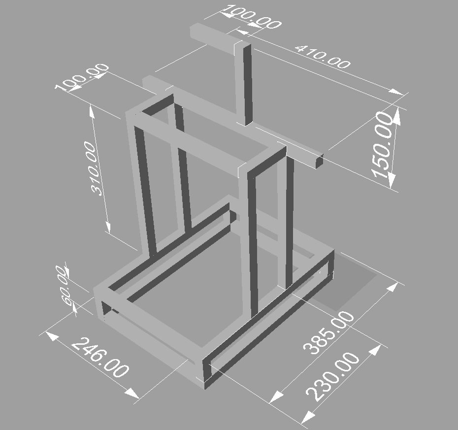
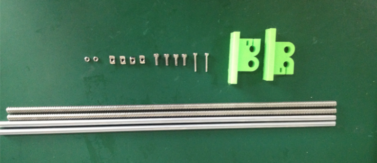
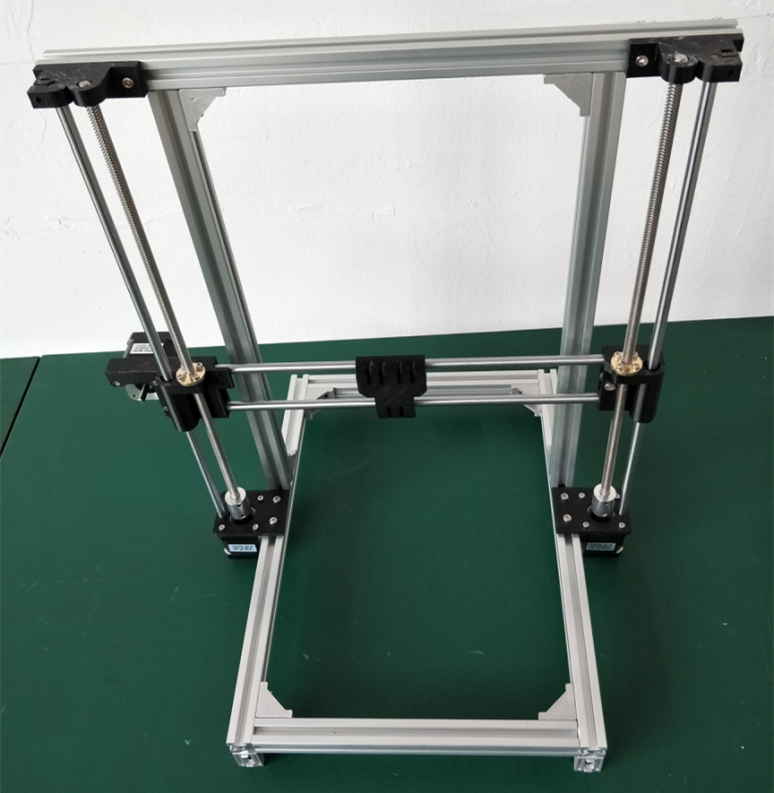
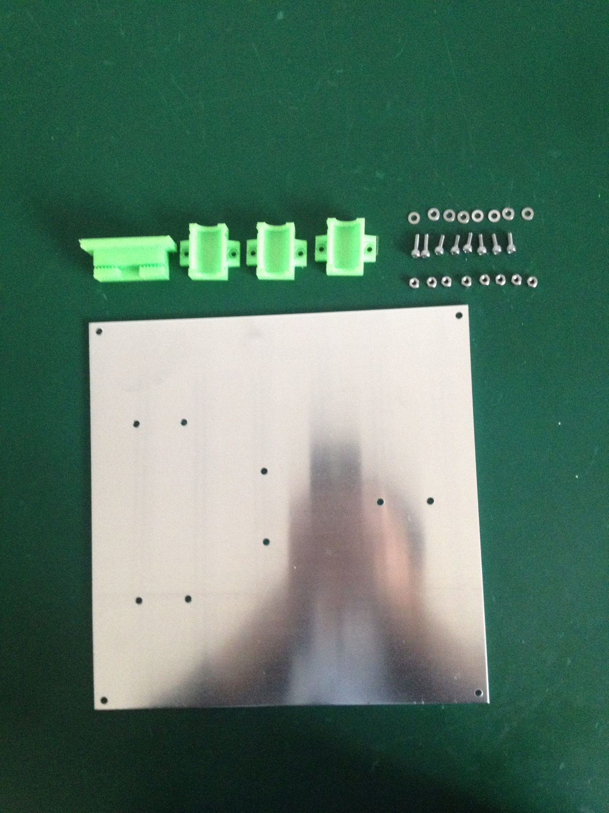
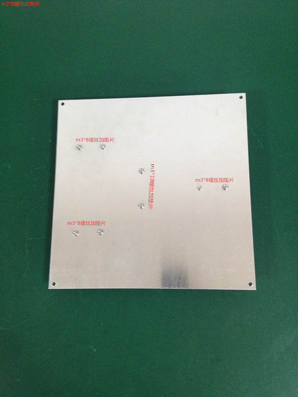
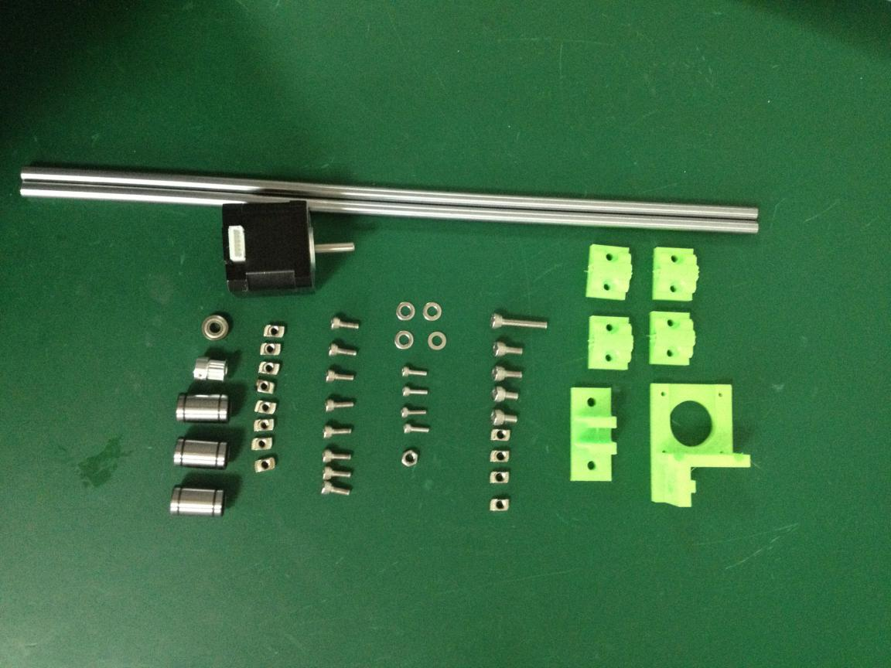
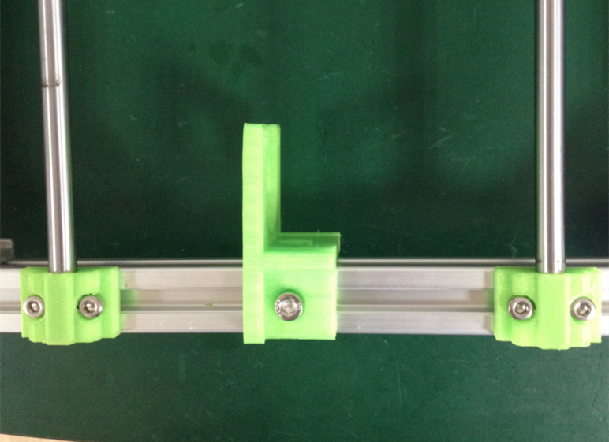
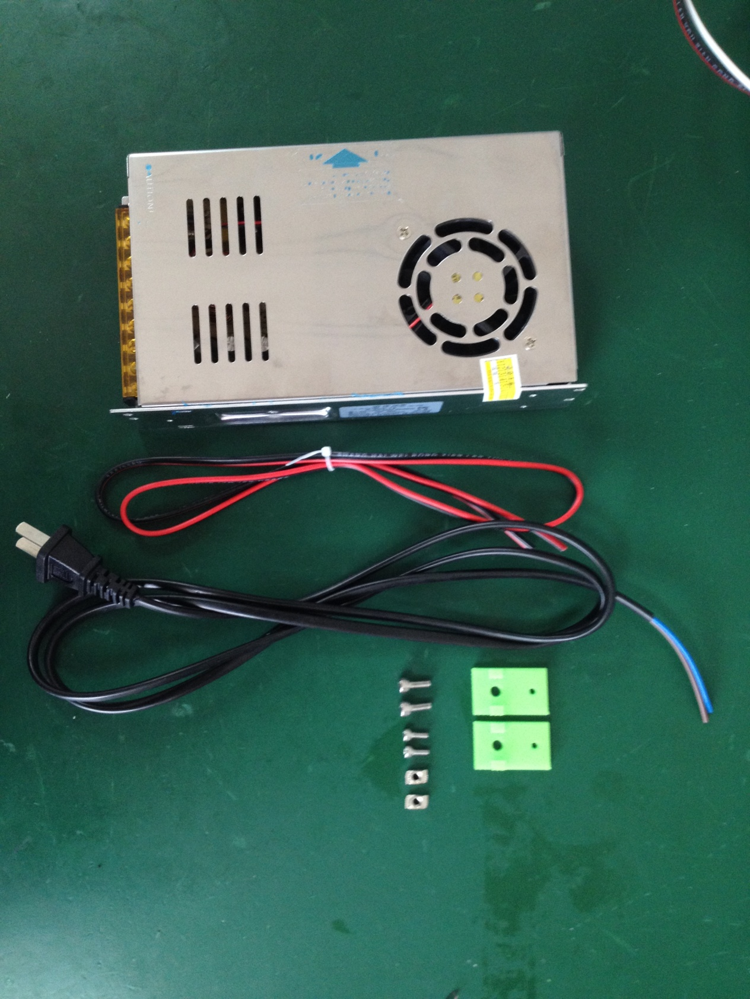
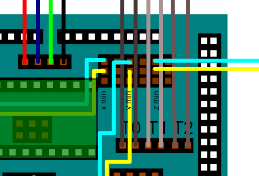

記錄3DPrint的相關資訊
因為同事要使用3DPrint所以將放很久的設備拿出來整理一下
3D 印表機安裝記錄
- 首先安裝底座 
先安裝長的兩個框框，鎖的時候要對準
 接下將四根鋁擠裝上，就完成的底座，要確定有互相垂直
接下將四根鋁擠裝上，就完成的底座，要確定有互相垂直

- 安裝Z軸
距離是230mm，這裏要注意
- X軸的組裝


Z軸和整體框架組裝
Z軸組裝所需材料：列印件2，電機2，聯軸器2，m310螺絲8，m410螺絲4，m4T型螺母4
<img src=Z軸組裝所需材料.png” style=”zoom:85%;” />
注意電機的接線的方向
所需材料：列印件2,330mm光軸2，300mm絲杆2，M410螺母4，M320螺絲2，M4T型螺母4，M3螺母*2
將框架，X軸以及以上配件裝配在一起如下圖

將框架，X軸以及以上配件裝配在一起如下圖


5 熱床組裝
熱床所需材料：熱床鋁板1，列印件4，m38螺絲6，m310螺絲2，m3平墊片8，m3螺母8

5-1 用m38的螺丝将y轴承座和m310的螺丝将y皮带座分别固定在铝板上，如下图


6 Y轴组装
所需材料：打印件6，电机1，345mm光轴2，直线轴承3，皮带轮1,695轴承1，m525螺丝1，m510螺丝2，
m58螺丝2，m410螺丝10，m310螺丝4，m5垫片4，m5 T型螺母4，m5螺母1

6-1 首先用m510螺丝和m525的螺丝将Y被动轮座安装如图所示，695轴承的两边分别垫2个m5的垫片
6-2 安裝y馬達座和皮帶輪。先用M58的螺絲和T型螺母固定在上面，在用M58的螺絲和T型螺母固定例一面。最後用4個M310的螺絲將馬達固定。
如下圖所示：在升級版安裝時，在內側的T型螺母要先將2020的鋁擠拆下來將此馬達座和螺絲先滑進去之後在來固定位置

7 电源安装
电源1，电源线1，红黑电源线1，打印件2，m410螺丝2，m38螺丝，m4T型螺母2，m3螺母*2

Prusa i3的注意事項
阻位開關，不是請參考下面的圖
